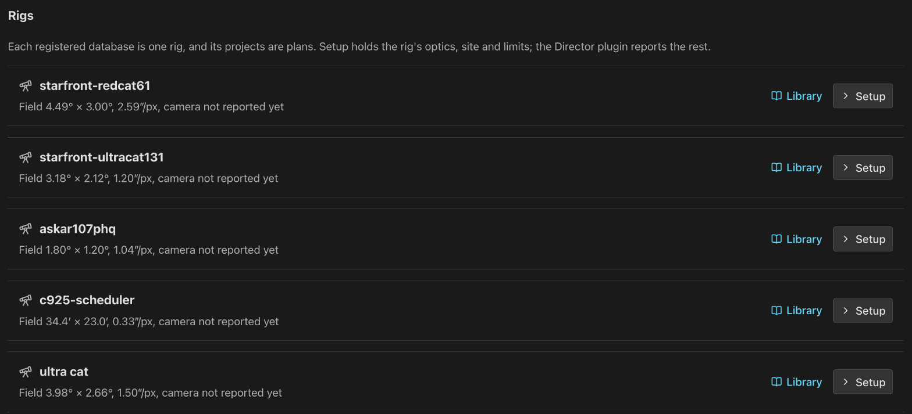
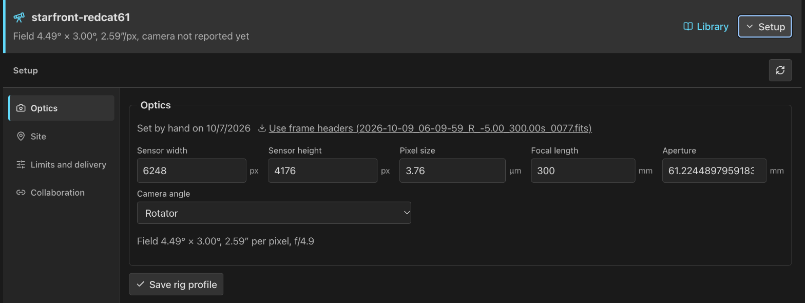
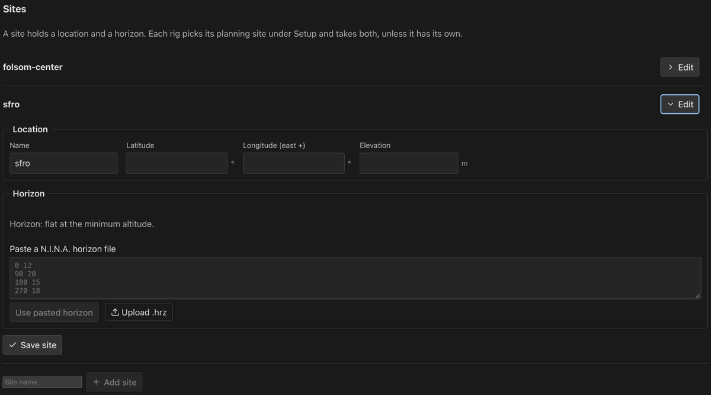
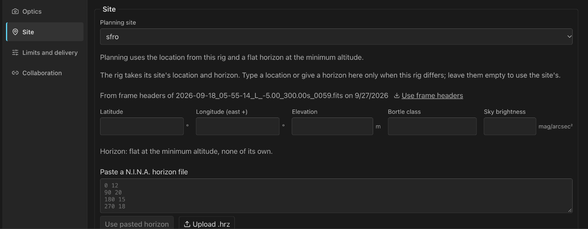
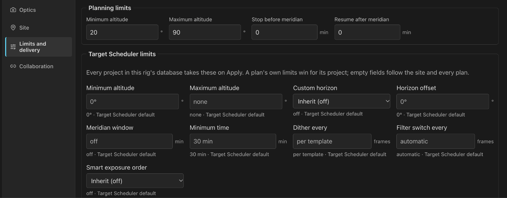
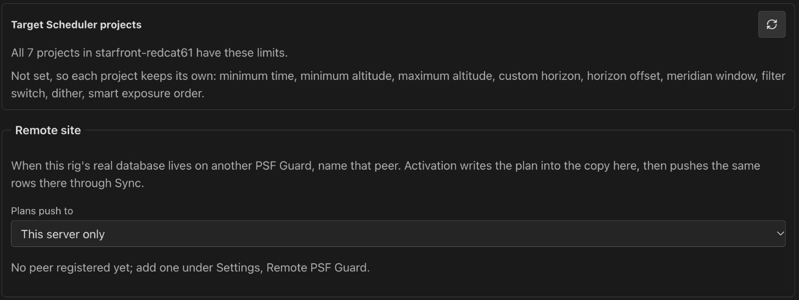

Rigs, Sites & Live
Every registered database is a rig. Give each rig its optics, site and limits, give sites a horizon, and watch rigs that run the Director plugin on the Sky.
The rig list
Settings › Rigs lists every registered database as a rig: whether planning is on, its field of view and pixel scale, whether the N.I.N.A. plugin has reported its camera, and the plugin's last status. Setup opens the rig's setup in place; Library opens its catalog.

Rig setup
The selected rig's header stays above its setup. Sections sit in a rail on the left on a desktop and in a strip on a narrow screen: Optics, Site, Limits and delivery and Collaboration. Edits stay in the form while you switch sections; Save rig profile saves them.

Optics
Optics hold the unbinned sensor size in pixels, pixel size in micrometres, effective focal length and aperture in millimetres, and how the camera angle changes: a rotator, turned by hand between sessions, or fixed. The field of view and pixel scale update as you type.
Use frame headers copies sensor size, pixel size, focal length, aperture and site from the newest frame the server can find, and names the file. Headers from N.I.N.A. record binned values; PSF Guard folds them back to the sensor. Each section says where its values came from: frame headers, set by hand, or reported by the plugin.
Sites and horizons
A site holds a location (latitude, east-positive longitude, elevation) and a horizon. Add and edit sites under Settings › Rigs › Sites. Each rig picks its Planning site and takes the site's location and horizon, unless its own fields say otherwise: a location typed into the rig, or a horizon pasted there or reported by the plugin.
A horizon is a N.I.N.A. .hrz file: one azimuth altitude
pair per line in degrees, # for comments. Paste or upload it, and
download it back for N.I.N.A. PSF Guard sorts the points and closes the curve
at north. It refuses a line that is not two numbers, an azimuth outside 0–360,
an altitude outside −90–90, or a repeated azimuth, and names the line.
Visibility, feasibility and the program sent to the plugin all use the resolved location and horizon. A rig with neither has no location, and its horizon is flat at its minimum altitude.


Limits and delivery
Limits and delivery holds the altitude and meridian limits planning uses, the rig's Target Scheduler scheduling limits, and Remote site.
The rig's Target Scheduler limits also reach projects no plan holds, such as ones made in N.I.N.A. Below the fields, Target Scheduler projects compares the saved limits with every project in the rig's database and lists each one that differs, with what will change. Apply writes them. A plan's own limits still win for its project. Apply is refused when a project or the limits changed since the list was read. Nothing applies by itself; a project made later waits for the next Apply.


Remote site
Set Remote site to the Sync peer that holds the rig's real database when the rig runs on another PSF Guard. Activation then pushes the plan to that peer. Leave it at This server only when N.I.N.A. writes this server's database. See Rigs at another site.
Live
Rigs that run the Director plugin report what they do. The header's
Live chip counts them: 2 rigs · 1 exposing, or
2 rigs · 1 online when none is exposing. It turns red when a rig
that used to talk goes quiet, and opens Live on the Sky from any
view.
On the Sky, each reporting rig is drawn on the coverage map where it points now. A list of rigs sits beside the map; choosing one turns the map to it. A quiet rig is drawn dashed red. A rig that reports no mount position is placed at its planned target, dotted and labeled at target.

The Live table under the map has one row per rig:
| Column | Shows |
|---|---|
| Link | Online within three minutes of any plugin call, Quiet within thirty, Offline beyond, Never seen before the first. |
| Doing | Phase, target, current operation and how long, wait reason, safety, queue depth and errors, from the last status report. A report older than its stated lifetime is marked stale. |
| Contact | How long since the rig pulled its program, checked in, and reported status. |
| Frames | Saved frames grading has not accepted yet. |
| Plans | Activated plans the rig is assigned to, each a link to its workspace. |
The table refreshes every fifteen seconds. A read-only account cannot open Settings, so Live on the Sky shows rig setup and the template library read only under the table.
The Director plugin
The Director plugin for N.I.N.A. is experimental. A paired plugin pulls its rig's program from the last activation over HTTP, keeps running on it through a network outage, checks in each saved frame, and reports live status. Saved frames count as pending credit until grading accepts them; a receipt is evidence a frame was taken, not that it passed. Pairing uses one-use codes an operator issues, and grants no control of equipment.
Without the plugin, activation still writes ordinary Target Scheduler rows, and the Target Scheduler plugin runs them as before.